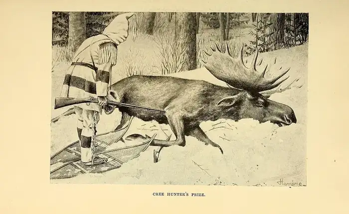
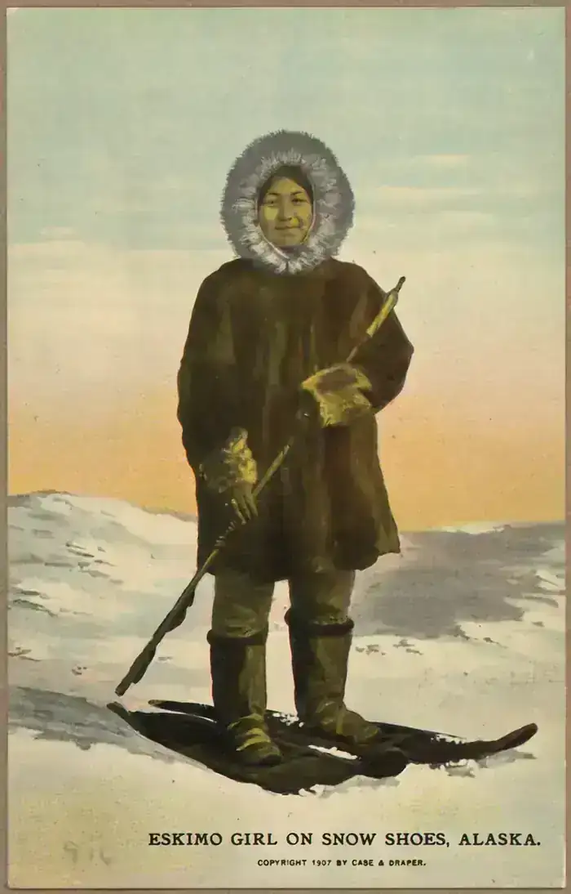
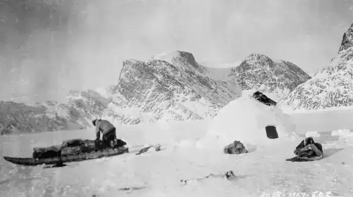

The claim
The claim that Inuit languages have dozens, hundreds or thousands of words for snow entered popular culture through a 1940 press account and a 1911 anthropology text, and it is repeated in textbooks and journalism.
Maps, diagrams and images






The evidence
Linguists have documented the actual vocabulary: Inuit languages use polysynthetic word formation, so any description can be expressed as a single word, which inflates naive counts. English also has many snow terms. The specific numbers are inventions.
Documented: the languages' snow vocabulary.
Not documented: the large numbers.
Explained: by polysynthesis.
The label: debunked.
Why it is in the archive
Because it is the most repeated fact about language that is not a fact.
Open resources on this topic
- PapersOpen-access articles: DOAJ · PubMed Central · Internet Archive Scholar
- BooksPublic-domain and borrowable copies: Open Library · Project Gutenberg · Google Books · Internet Archive
Cite this page
Momin, S. (2026). Eskimo Snow Words. The Larger World Archive. https://drsamonline.github.io/LARGE_GLOBE/eskimo-snow-words.htmlMomin, Sohil. “Eskimo Snow Words.” The Larger World Archive, 2026, https://drsamonline.github.io/LARGE_GLOBE/eskimo-snow-words.html.Momin, Sohil. “Eskimo Snow Words.” The Larger World Archive, 2026. https://drsamonline.github.io/LARGE_GLOBE/eskimo-snow-words.html.@misc{eskimo2026eskimo,
author = {Momin, Sohil},
title = {Eskimo Snow Words},
year = {2026},
howpublished = {The Larger World Archive},
url = {https://drsamonline.github.io/LARGE_GLOBE/eskimo-snow-words.html},
note = {Last reviewed 20 November 2026}
}Last reviewed 20 November 2026 · Corrections policy · this page is not peer reviewed
Sources for this page
- Wikipedia, “Eskimo words for snow” — the claimen.wikipedia.org
- Wikipedia, “Polysynthetic language” — the mechanismen.wikipedia.org
- Wikipedia, “Inuit languages” — the languagesen.wikipedia.org
- Wikipedia, “Linguistic relativity” — the contexten.wikipedia.org